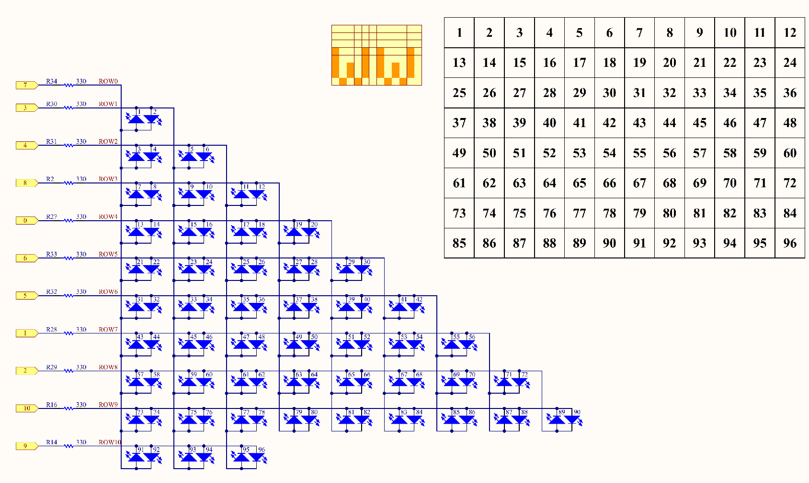

แนะนำการใช้งานบอร์ด Arduino Uno R4 WiFi ในเบื้องต้น#
Keywords: Arduino Uno R4 WiFi, RA4M1, Arm Cortex-M4, ESP32-S3
- บอร์ด Arduino Uno R4
- ข้อมูลเชิงเทคนิคของบอร์ด Uno R4
- การใช้งานโมดูล Espressif ESP32-S3
- การเขียนโปรแกรมด้วย Arduino IDE
- ตัวอย่างการใช้งาน FreeRTOS
- ตัวอย่างการใช้งาน LED Matrix
- ตัวอย่างการใช้งาน WiFi + MQTT Client
- ตัวอย่างการใช้งาน Uno R4 WiFi + SPI ADC / DAC
▷ บอร์ด Arduino Uno R4#
ทีมผู้พัฒนา Arduino ได้เปิดตัวบอร์ด Arduino Uno R4 ในเดือนมีนาคม พ.ศ. 2566 โดยแบ่งออกเป็น 2 รุ่นคือ
- Arduino Uno R4 WiFi
- Arduino Uno R4 Minima: ไม่มีโมดูล WiFi และไม่มีวงจร 12x8 LED Matrix
และถือว่าเป็นบอร์ดรุ่นถัดจาก Arduino Uno R3 เนื่องจากมีขนาดและรูปร่างของบอร์ดเหมือนกัน และใช้แรงดันไฟเลี้ยงสำหรับชิปไมโครคอนโทรลเลอร์ 5V บอร์ด Uno R4 WiFi มีราคาสูงกว่าบอร์ด Uno R4 Minima
รูป: บอร์ด Uno R4 Minima และ Uno R4 WiFi
เอกสารที่เกี่ยวข้อง#
-
Arduino Uno R4 Minima
-
Arduino Uno R4 WiFi
- Renesas RA Family
▷ ข้อมูลเชิงเทคนิคของบอร์ด Uno R4#
ชิปตัวประมวลผล#
MCU: Renesas RA4M1 (R7FA4M1AB3CFM#AA0)
- CPU Core: 32-bit Arm Cortex-M4F (Armv7E-M Architecture)
- CPU Clock Speed: 48MHz
- On-chip Memory:
- Flash: 256 kB
- SRAM: 32 kB
- Data EEPROM: 8 kB
- Voltage Range: 1.6V ~ 5.5V
- Chip Package: 64-LFQFP
- Single-Precision Floating-point unit (FPU)
- Memory Protection Unit (MPU)
- 128-bit Unique ID
- Timers:
- 2-Channel General PWM Timer 32-Bit (GPT32)
- 6-Channel General PWM Timer 16-Bit (GPT16)
- 2-Channel Low Power Asynchronous General-Purpose Timer 16-bit (AGT)
- 1× Watchdog Timer (WDT)
- 4× Serial Communications Interface (SCI)
- 2× Serial Peripheral Interface (SPI)
- 2× I2C bus Interface
- 1× Analog Temperature Sensor (TSN)
- 1× RTC (Real-Time Clock)
- 1× CAN bus Controller (No CAN transceiver onboard)
- Analog:
- 14-bit ADC (Digital-to-Analog Converter)
- 12-bit DAC (Analog-to-Digital Converter)
- 2× Low-Power Analog Comparators (ACMPLP)
- 4× Operational Amplifiers (OPAMP)
- Security:
- AES128/256 (Encryption)
- GHASH (Hash Function)
- TRNG (True Random Number Generator)
ในส่วนถัดไปของบทความ จะกล่าวถึงเฉพาะบอร์ด Arduino Uno R4 WiFi
วงจรบนบอร์ด#
- I/O Operating Voltage: 5V (not 3.3V)
- 1× USB Type-C Connector
- 20× Digital I/O: 8mA (max) per I/O pin
D0~D13pinsA0/D14~A5/D19pins
- 6× PWM Output (12-bit resolution):
D3,D5,D6,D9,D10,D11pins - Analog Input (14-bit resolution):
A0~A5pins - Analog Output (12-bit resolution):
A0pin - OpAmp In+ / In- Pins:
A1/A2pins - OpAmp Out:
A3pin - Onboard LED:
D13pin - UART/Serial:
D0=Rx0,D1=Tx0 (Serial1) - SPI (2x3 ICSP Header):
COPI=
D11, 5V, CIPO=D12, SCK=D13, /RESET, GND - I2C:
A4=SDA,A5=SCL (Wire) - I2C1:
D18=SDA,D19=SCL (Wire1) - CAN busns:
D10=CANRX,D13=CANTX - DAC output:
A0pin - Reset Button
- 4× LEDs
- DL1 (TX LED):
P109pin - DL2 (RX LED):
ESP_TXD0pin - DL3 (5V Power ON LED)
- DL4 (SCK LED):
P102pin (Arduino D13 pin)
- DL1 (TX LED):
- VRTC (VBATT) & GND pins (for battery backup, 1.6V~3.6V)
- OFF pin
- 1× Qwiic/STEMMA Connector for I2C bus (
Wire1)- 1mm-pitch, 4-pin, JST Connector
- 3.3V logic level
- LED Matrix: 12 x 8 LEDs
- Power Supply
- VIN pin: 6V ~ 24V (Barrel Plug / DC Jack)
- Linear Voltage Regulator (3.3V output): SGM2205-3.3XKC3G/TR
- Step-down (Buck) Voltage Regulator (5V output): ISL854102FRZ-T
- USB Type-C 5V supply + PTC Resettable Fuse + ESD protection diode
- USB Bridge for USB_D+ and USB_D- signals
- 2×3 ESP Pin Header (for ESP32-S3 firmware upload)
- 1× ESP32-S3-MINI-1-N8 Module (8MB Flash)
- Xtensa dual-core 32-bit LX7, 240MHz
- 3.3V operating voltage
- Logic-level translator IC: TXB0108DQSR
ข้อสังเกต
- ชิป RA4M1 ทำงานด้วยแรงดันไฟเลี้ยง 5V ในขณะที่โมดูล ESP32-S3 ทำงานด้วยแรงดันไฟเลี้ยง 3.3V ดังนั้นจึงมีการใช้ไอซี TXB0108DQSR (8-bit Bidirectional Voltage Level Shifter) เพื่อเชื่อมต่อสัญญาณที่มีระดับแรงดันไฟฟ้าต่างกันในทั้งสองทิศทางของสัญญาณ
- บอร์ด Uno R4 WiFi ใช้แรงดันไฟเลี้ยง 5V ได้จาก USB Type-C หรือจะใช้แรงดันไฟเลี้ยงในช่วง 6V ~ 24V ผ่านทาง VIN หรือต่อผ่าน DC Jack ไปยังไดโอดป้องกันการต่อกลับขั้ว (Schottky Diode) และมีวงจรที่ทำหน้าที่ลดระดับแรงดันไฟฟ้า Step-down (Buck) DC-DC Converter ให้ได้แรงดันไฟฟ้า 5V
- แรงดันไฟเลี้ยง 3.3V สำหรับ ESP32-S3 ได้จากการแปลง 5V ให้เป็น 3.3V โดยใช้ไอซี Linear Voltage Regulator
- วงจร 12x8 LED Matrix ใช้ขาจำนวน 11 ขา ต่อไปนี้ในการควบคุม:
P003,P004,P011,P012,P013,P015,P204,P206,P212,P213

รูป: แผนผังแสดงตำแหน่งขาบนบอร์ด Uni R4 WiFi
รูป: แผนผังแสดงความเชื่อมโยงระหว่างขาของชิปและขาของบอร์ด Uni R4 WiFi
รูป: แผนผังแสดงระดับแรงดันไฟเลี้ยงสำหรับวงจรบนบอร์ด Uno R4 WiFi

รูป: แผนผังแสดงวงจร LED Matrix ของบอร์ด Uno R4 WiFi
รายการของขา I/O สำหรับ Uno R4 WiFi
- P301 = D0 / RX
- P302 = D1 / TX
- P104 = D2
- P105 = D3~
- P106 = D4
- P107 = D5~
- P111 = D6~
- P112 = D7
- P304 = D8
- P303 = D9~
- P103 = D10~
- P411 = D11~
- P410 = D12
- P102 = D13
- P014 = D14 / A0 / DAC
- P000 = D15 / A1
- P001 = D16 / A2
- P002 = D17 / A3
- P101 = D18 / A4 / SDA
- P100 = D19 / A5 / SCL
- P500 = D20 / Analog voltage measure pin
- P408 = D21 / USB switch, drive high for connecting USB to RA4
- P109 = D22 / TX <--> ESP_RXD0
- P110 = D23 / RX <--> ESP_TXD0
- P501 = D24 / TX WIFI --> ESP_IO6
- P502 = D25 / RX WIFI <-- ESP_IO5
- P400 = D26 / QWIC SCL (3.3V logic)
- P401 = D27 / QWIC SDA (3.3V logic)
- P003 = D28
- P004 = D29
- P011 = D30
- P012 = D31
- P013 = D32
- P015 = D33
- P204 = D34
- P205 = D35
- P206 = D36
- P212 = D37
- P213 = D38
▷ การใช้งานโมดูล Espressif ESP32-S3#
ESP32-S3 SoC บนบอร์ด Uno R4 WiFi ทำหน้าที่ ดังต่อไปนี้
- USB Device: ทำหน้าที่เป็นอุปกรณ์ USB (VID=0x2341, PID=0x1002) เชื่อมต่อกับคอมพิวเตอร์ของผู้ใช้
- CMSIS-DAP Programmer ใช้สำหรับการอัปโหลดหรือโปรแกรมไฟล์เฟิร์มแวร์ จากคอมพิวเตอร์ของผู้ใช้ผ่านทางพอร์ต USB สำหรับชิป RA4M1 (ต่อกับขา SWCLK และ SWDIO)
- USB Bridge เป็นตัวกลางในการเชื่อมต่อข้อมูลด้วย USB-Serial (USB CDC, Baudrate=115200) ระหว่างคอมพิวเตอร์ของผู้ใช้ผ่านทางพอร์ต USB
- เชื่อมต่อกับชิป RA4M1 ผ่านทางขา TX / RX หนึ่งคู่ (Baudrate=115200) สำหรับการสื่อสารด้วย
AT Commands เพื่อใช้ในการสื่อสารผ่าน WiFi / BLE
- ESP32-S3:
GPIO44(U0RXD) /GPIO43(U0TXD) pins - RA4M1:
P109(TXD) /P110(RXD) pins
- ESP32-S3:
- Firmware:
uno-r4-wifi-usb-bridge
บอร์ด Uno R4 WiFi มีวงจรที่ใช้ไอซี Analog Switch (2:1 Multiplexer) เพื่อใช้เลือกการเชื่อมต่อระหว่างสัญญาณ USB D+/D- ของพอร์ต USB Type-C ไปยังขา USB D+/D- ของชิป ESP32-S3 (default) หรือ ขาของชิป RA4M1 โดยตรง
รูป: บางส่วนจาก Schematic แสดงให้เห็นวงจร Analog Mux เพื่อเลือกการเชื่อมต่อ
พอร์ต USB Type-C USB D+/D- ไปยัง ESP32-S3 หรือ RA4M1
โดยมีสัญญาณควบคุมจากขา P408 (D21)
หากต้องการอัปเดตเฟิร์มแวร์ (Firmware Update)
สำหรับ ESP3-S3 (uno-r4-wifi-usb-bridge)
ก็สามารถทำได้ง่าย ผ่านทางพอร์ต USB
นอกจากนั้นแล้ว บอร์ด Uno R4 WiFi ยังมีคอนเนกเตอร์ 2x3 Male Pin header
สามารถใช้เป็นช่องทางการอัปโหลดไฟล์เฟิร์มแวร์ให้กับ ESP32-S3 ได้โดยตรง
ESP_IO42: MTMS Debugging (Pin 1)ESP_IO41: MTDI Debugging (Pin 2)ESP_TXD0: Serial Transmit (UART-Tx) (Pin 3)ESP_DOWNLOAD: Boot (Pin 4)ESP_RXD0: Serial Receive (UART-Rx) (Pin 5)GND: Ground (Pin 6)
▷ การเขียนโปรแกรมด้วย Arduino IDE#
สำหรับการเขียนโปรแกรมด้วย Arduino Sketch สำหรับบอร์ด Uno R4 โดยใช้ซอฟต์แวร์ Arduino IDE ก่อนอื่นให้ติดตั้งซอฟต์แวร์ต่อไปนี้ ภายใต้ Boards Manager: Arduino Core for Renesas
รูป: การติดตั้ง Arduino Board Manager สำหรับบอร์ด Uno R4
การอัปเดตเฟิร์มแวร์ให้กับ ESP32S3 ทำได้มากกว่าหนึ่งวิธี
วิธีหนึ่งคือ การทำให้ ESP32S3 เข้าสู่โหมด BOOT Loader
โดยการต่อขา ESP_DOWNLOAD (GPIO-0) กับ GND แล้วป้อนไฟเลี้ยงให้บอร์ด
จากนั้นก็สามารถใช้โปรแกรม esptool.py ของ Espressif ตามคำสั่งตัวอย่างดังนี้
esptool -b 115200 write_flash 0x0 S3-ALL.bin

รูป: ตัวอย่างการใช้คำสั่ง esptool สำหรับอัปโหลดเฟิร์มแวร์ (.bin) ไปยัง ESP32-S3 บนบอร์ด Uno R4 WiFi

รูป: ตัวอย่างการเขียนโค้ด Arduino Sketch เพื่อทำให้ LED บนบอร์ด (ตรงกับขา Arduino D13)
การเขียนโปรแกรมเพื่อเชื่อมต่อ WiFi โดยใช้โมดูล ESP32-S3 สำหรับบอร์ด
Uno R4 WiFi จะต้องใช้ไลบรารีที่มีชื่อว่า WiFiS3
การตรวจสอบเวอร์ชันของเฟิร์มแวร์ WiFiS3 ทำได้โดยใช้คำสั่ง WiFi.firmwareVersion()
ข้อสังเกต
- ไลบรารี่สำหรับ Arduino ที่สามารถใช้กับบอร์ด เช่น Uno / Nano อาจยังใช้ไม่ได้กับบอร์ด Uno R4 / WiFi ลองดูตัวอย่างรายการไลบรารี่ที่ทางทีมงาน Arduino ได้ทดสอบ: Uno R4 Library Compatibility
▷ ตัวอย่างการใช้งาน Serial#
บอร์ด Uno R4 WiFi มีช่องทางการสื่อสารแบบ Serial มากกว่าหนึ่งช่องทาง
หากมีการเปิดใช้งาน USB (โดยใช้ TinyUSB Stack)
การเรียกใช้งาน Serial ในโค้ด Arduino Sketch จะหมายถึง SerialUSB
ซึ่งเป็นการสื่อสารข้อมูลผ่าน USB CDC (Communications Device Class)
นอกจากนี้ ชิป RA4M1 ยังมีวงจรภายในรองรับ UART / Hardware Serial ได้หลายชุด
โดยสามารถใช้งานผ่าน เช่น Serial1 และ Serial2 ซึ่งถูกสร้างจากคลาส UART
การตั้งค่าขา I/O สำหรับ UART สำหรับ Arduino มีดังนี้
- UART1 เชื่อมต่อกับ ESP32-S3 และตรงกับ
Serial2UART1_TX_PIN= Arduino Pin 22UART1_RX_PIN= Arduino Pin 23
- UART2 จะตรงกับขา D1/D0 ตามลำดับ และตรงกับ
Serial1UART2_TX_PIN= Arduino Pin 1UART2_RX_PIN= Arduino Pin 0
- UART3 จะใช้สำหรับการสื่อสารกับ ESP32-S3 เพื่อใช้งาน Wi-Fi/BLE Modem
UART3_TX_PIN= Arduino Pin 24UART3_RX_PIN= Arduino Pin 25
ในโค้ดตัวอย่างถัดไป มีการเปิดใช้งาน Serial และ Serial1 (ใช้ Baudrate 115200)
โดยใช้ Tx/Rx ตามที่มีการกำหนดไว้แล้วโดย Arduino API
แต่ MySerial ซึ่งสร้างจากคลาส UART เป็นตัวอย่างเลือกใช้ขา Tx / Rx (ใช้ Baudrate 9600)
เพื่อใช้งานออกทางขา 18/A4 และ 19/A5
หากจะลองใช้โมดูล USB-to-Serial เชื่อมต่อกับขา Tx/Rx ซึ่งมีแรงดันไฟฟ้า (I/O Voltage) เป็น 5V และแนะนำให้ใช้ชิป CP210x ของ Silicon Labs เนื่องจากมีคุณสมบัติ 5V Input tolerant
#define LED_PIN LED_BUILTIN // D13 pin
#define USER_TX_PIN (18u) // Pin A4
#define USER_RX_PIN (19u) // Pin A5
UART MySerial(USER_TX_PIN, USER_RX_PIN);
void setup() {
Serial.begin( 115200 );
Serial1.begin( 115200 );
MySerial.begin( 9600 );
pinMode( LED_PIN, OUTPUT );
delay(1000);
// Show the default Arduino UART pins
Serial.println( UART1_TX_PIN ); // 22
Serial.println( UART1_RX_PIN ); // 23
Serial.println( UART2_TX_PIN ); // 1
Serial.println( UART2_RX_PIN ); // 0
Serial.println( UART3_TX_PIN ); // 24
Serial.println( UART3_RX_PIN ); // 25
}
void loop() {
int state = !digitalRead(LED_PIN);
digitalWrite( LED_PIN, state );
Serial1.print( state ? 'H' : 'L' );
MySerial.print( state ? '1' : '0' );
delay(500);
}
รูป: ตัวอย่างคลื่นสัญญาณที่วัดด้วยออสซิลโลสโคปที่ขา Tx=18/A4 (BAUD=9600) และ Tx=1 (BAUD=115200) และให้สังเกตว่า ลอจิก High มีแรงดันอยู่ที่ประมาณ 5V
▷ ตัวอย่างการใช้งาน FreeRTOS#
ตัวอย่างนี้สาธิตการใช้งาน FreeRTOS ในรูปแบบของ Arduino Library
(Arduino_FreeRTOS)
โดยมีการสร้าง FreeRTOS Tasks หรือ มีการแบ่งงานออกเป็น 2 ส่วน ดังนี้
BlinkTask: ทำให้ LED กระพริบ ด้วยอัตราคงที่WiFiScan: ตรวจสอบเครือข่าย Wi-Fi รอบ ๆ และแสดงรายการที่ตรวจพบผ่านทาง Serial
#include <Arduino_FreeRTOS.h>
#include <WiFiS3.h>
// LED pin for Uno R4 WiFi (built-in)
const int ledPin = LED_BUILTIN;
// WiFi scan interval (in milliseconds)
const TickType_t wifiScanDelay = (10000 / portTICK_PERIOD_MS);
// LED Blinking Task
void BlinkTask(void *pvParameters) {
pinMode(ledPin, OUTPUT);
while (1) {
digitalWrite(ledPin, HIGH);
vTaskDelay(500 / portTICK_PERIOD_MS);
digitalWrite(ledPin, LOW);
vTaskDelay(500 / portTICK_PERIOD_MS);
}
}
// WiFi Scan Task
void WifiScanTask(void *pvParameters) {
Serial.println("Starting WiFi scan task...");
if (WiFi.status() == WL_NO_MODULE) {
Serial.println("No WiFi module detected.");
vTaskSuspend(NULL);
}
while (1) {
Serial.println("WiFi scanning...");
int networks = WiFi.scanNetworks();
if (networks == 0) {
Serial.println("No Wi-Fi networks found.");
} else {
Serial.print(networks);
Serial.println(" network(s) found:");
for (int i = 0; i < networks; i++) {
Serial.print(" ");
Serial.print(i + 1);
Serial.print(": ");
Serial.print(WiFi.SSID(i));
Serial.print(" (RSSI: ");
Serial.print(WiFi.RSSI(i));
Serial.print(" dBm, ");
printEncryptionType(WiFi.encryptionType(i));
Serial.println(")");
}
}
vTaskDelay(wifiScanDelay);
}
}
void printEncryptionType(uint8_t type) {
switch (type) {
case ENC_TYPE_WEP: Serial.print("WEP"); break;
case ENC_TYPE_TKIP: Serial.print("WPA"); break;
case ENC_TYPE_CCMP: Serial.print("WPA2"); break;
case ENC_TYPE_NONE: Serial.print("Open"); break;
case ENC_TYPE_AUTO: Serial.print("Auto"); break;
default: Serial.print("Unknown"); break;
}
}
void setup() {
Serial.begin(115200);
while (!Serial);
delay(100);
// Create FreeRTOS tasks
xTaskCreate(BlinkTask, "Blink", 128, NULL, 1, NULL);
xTaskCreate(WifiScanTask, "WiFiScan", 512, NULL, 1, NULL);
Serial.println("\n\n\n");
Serial.flush();
// Start the FreeRTOS scheduler
vTaskStartScheduler();
}
void loop() {
}
ในตัวอย่างนี้ การทำงานของ FreeRTOS Task Scheduler จะเริ่มทำงานหลังจากเรียกฟังก์ชัน vTaskStartScheduler()
แต่ถ้าจะตั้งค่าให้เริ่มทำงานโดยอัตโนมัติ โดยไม่ต้องทำคำสั่งดังกล่าวใน Arduino Sketch ก็มีแนวทางดังนี้
รูป: แนวทางการตั้งค่าให้ FreeRTOS Task Scheduler เริ่มทำงานโดยอัตโนมัติ
หากต้องการตรวจสอบ FreeRTOS Config ก็สามารถดูได้จากไฟล์ FreeRTOSConfig.h
รูป: ตัวอย่างจากไฟล์ FreeRTOSConfig.h ของไลบรารี (Arduino_FreeRTOS)
ผู้ใช้สามารถตั้งค่าใช้งานได้ โดยจะต้องแก้ไขไฟล์ FreeRTOSConfig.h
Windows: ให้ไปยังไดเรกทอรี
C:\Users\%USERNAME%\AppData\Local\Arduino15\packages\arduino\hardware\
แล้วเปิดแก้ไขไฟล์ในไดเรกทอรีต่อไปนี้ (1.4.1 คือ ตัวเลขเวอร์ชันของไลบรารีที่ได้ลองใช้งาน)
renesas_uno\1.4.1\libraries\Arduino_FreeRTOS\src\FreeRTOSConfig.h
ตรวจสอบการตั้งค่าเพิ่มเติม
#define configUSE_MUTEXES 1
#define configUSE_RECURSIVE_MUTEXES 1
#define configUSE_TIME_SLICING 1
#define INCLUDE_xTaskGetHandle 1
#define INCLUDE_eTaskGetState 1
ตัวอย่างโค้ดตรวจสอบการตั้งค่าสำหรับ FreeRTOS Configuration
#include <Arduino_FreeRTOS.h> // based on FreeRTOS-Kernel-v10.5.1
// Hardware support: Arduino UNO R4 and Arduino Portenta C33
TaskHandle_t task1_handle, task2_handle;
void setup() {
Serial.begin(115200);
while (!Serial);
pinMode( LED_BUILTIN, OUTPUT );
digitalWrite( LED_BUILTIN, LOW );
Serial.println( String("configTICK_RATE_HZ : ")
+ configTICK_RATE_HZ );
Serial.println( String("configCPU_CLOCK_HZ : ")
+ configCPU_CLOCK_HZ );
Serial.println( String("configMAX_PRIORITIES : ")
+ configMAX_PRIORITIES );
Serial.println( String("configMINIMAL_STACK_SIZE : ")
+ configMINIMAL_STACK_SIZE );
Serial.println( String("configUSE_TIME_SLICING : ")
+ configUSE_TIME_SLICING );
Serial.println( String("configUSE_COUNTING_SEMAPHORES : ")
+ configUSE_COUNTING_SEMAPHORES );
Serial.println( String("configUSE_MUTEXES : ")
+ configUSE_MUTEXES );
Serial.println( String("configUSE_RECURSIVE_MUTEXES : " )
+ configUSE_RECURSIVE_MUTEXES );
BaseType_t ret_val = xTaskCreate (
task1_func,
"Task 1",
128,
NULL,
1,
&task1_handle
);
if (ret_val != pdPASS) {
Serial.println( "Failed to create Task 1!!!" );
error_handler();
}
ret_val = xTaskCreate (
task2_func,
"Task 2",
128,
NULL,
1,
&task2_handle
);
if (ret_val != pdPASS) {
Serial.println("Failed to create Task 2!!!");
error_handler();
}
Serial.println( "Starting the FreeRTOS scheduler ...");
vTaskStartScheduler();
for(;;);
}
void loop() {
//
}
void task1_func(void *pvParameters) {
(void)pvParameters; // not used
TickType_t lastWakeTime = xTaskGetTickCount();
for(;;) {
digitalWrite(LED_BUILTIN, LOW );
vTaskDelayUntil( &lastWakeTime, pdMS_TO_TICKS(1000) );
}
}
void task2_func(void *pvParameters) {
(void)pvParameters; // not used
vTaskDelay( pdMS_TO_TICKS(500) );
TickType_t lastWakeTime = xTaskGetTickCount();
for(;;) {
digitalWrite(LED_BUILTIN, HIGH );
vTaskDelayUntil( &lastWakeTime, pdMS_TO_TICKS(1000) );
}
}
void error_handler() {
Serial.println("The system will be reset...\n\n\n");
delay(5000);
NVIC_SystemReset();
}
ตัวอย่างการลองใช้ FreeRTOS Mutex
#include <Arduino_FreeRTOS.h>
// Global variables
int flag = 0;
TaskHandle_t task_handle1;
TaskHandle_t task_handle2;
SemaphoreHandle_t xMutex;
void setup() {
Serial.begin(115200);
while (!Serial);
// Create a mutex
xMutex = xSemaphoreCreateMutex();
if (xMutex == NULL) {
Serial.println( "Mutex creation failed!!!" );
while (1);
}
int task_stack_size = configMINIMAL_STACK_SIZE;
int task_priority = 2;
// Create two tasks
xTaskCreate(task_func1,
"Task 1",
task_stack_size,
NULL,
task_priority,
&task_handle1 );
xTaskCreate(task_func2,
"Task 2",
task_stack_size,
NULL,
task_priority,
&task_handle2 );
// Start the FreeRTOS scheduler.
vTaskStartScheduler();
for(;;);
}
void loop() {
// ...
}
void task_func1(void *pvParameters) {
(void)pvParameters; // not used
while (1) {
// Request the mutex before entering the critical section
if (xSemaphoreTake(xMutex, portMAX_DELAY) == pdTRUE) {
// Critical section
if (flag==0) {
flag = 1;
Serial.println( String("Task 1: ") + (flag ? "Tick":"Tock") );
Serial.flush();
vTaskDelay(500 / portTICK_PERIOD_MS);
}
// Release the mutex after leaving the critical section
xSemaphoreGive(xMutex);
}
taskYIELD();
}
}
void task_func2(void *pvParameters) {
(void)pvParameters; // not used
while (1) {
// Request the mutex before entering the critical section
if (xSemaphoreTake(xMutex, portMAX_DELAY) == pdTRUE) {
// Critical section
if (flag==1) {
flag = 0;
Serial.println( String("Task 2: ") + (flag ? "Tick":"Tock") );
Serial.flush();
vTaskDelay(500 / portTICK_PERIOD_MS);
}
// Release the mutex after leaving the critical section
xSemaphoreGive(xMutex);
}
taskYIELD();
}
}
▷ ตัวอย่างการใช้งาน LED Matrix#
บอร์ด Uno R4 WiFi มี LED Matrix ตัวอย่างนี้สาธิตการแสดงรูปสัญลักษณ์บน
LED Matrix โดยใช้คำสั่งจากไลบรารี Arduino_LED_Matrix และแสดงรูปสัญลักษณ์ Heart
ที่มีขนาดเล็กกับใหญ่ สลับกันแสดงผล โดยใช้ FreeRTOS Task
นอกจากนั้นแล้วยังมีการใช้คำสั่ง analogWrite(...) สำหรับกำหนดความสว่างของ LED บนบอร์ด
#include <Arduino_FreeRTOS.h>
#include <Arduino_LED_Matrix.h>
ArduinoLEDMatrix matrix;
// Hardware support: Arduino UNO R4 and Arduino Portenta C33
TaskHandle_t task1_handle, task2_handle;
void setup() {
Serial.begin(115200);
while (!Serial);
BaseType_t ret_val = xTaskCreate(
task1_func, "Task 1", 128, NULL, 1, &task1_handle );
if (ret_val != pdPASS) {
Serial.println( "Failed to create Task 1!!!" );
error_handler();
}
ret_val = xTaskCreate( task2_func, "Task 2", 128, NULL, 1, &task2_handle );
if (ret_val != pdPASS) {
Serial.println("Failed to create Task 2!!!");
error_handler();
}
Serial.println( "Starting the FreeRTOS scheduler ...");
vTaskStartScheduler();
for(;;);
}
void loop() {
//
}
void task1_func(void *pvParameters) {
(void)pvParameters; // not used
TickType_t lastWakeTime = xTaskGetTickCount();
int value = 0;
pinMode( LED_BUILTIN, OUTPUT );
analogWriteResolution(8);
for(;;) {
analogWrite( LED_BUILTIN, (value > 255) ? 511-value: value );
value = (value+1) % 512;
vTaskDelayUntil( &lastWakeTime, pdMS_TO_TICKS(5) );
}
}
void task2_func(void *pvParameters) {
(void)pvParameters; // not used
TickType_t lastWakeTime = xTaskGetTickCount();
matrix.begin();
int index = 0;
for(;;) {
matrix.loadFrame( (index==0) ?
LEDMATRIX_HEART_BIG : LEDMATRIX_HEART_SMALL );
index = (index+1) % 2;
vTaskDelayUntil( &lastWakeTime, pdMS_TO_TICKS(200) );
}
}
void error_handler() {
Serial.println("The system will be reset...\n\n\n");
delay(5000);
NVIC_SystemReset();
}
▷ ตัวอย่างการใช้งาน WiFi + MQTT Client#
ตัวอย่างถัดไปสาธิตการเชื่อมต่อเครือข่าย WiFi และส่ง-รับข้อความด้วย MQTT
โดยใช้ Public MQTT Broker เช่น "broker.emqx.io
// Uno R4 WiFi (Arduino Core for Uno R4 v1.4.1)
#include <WiFiS3.h>
// This sketch uses the PubSubClient library v2.8
// https://github.com/knolleary/pubsubclient/
#include <PubSubClient.h>
// This file defines WIFI_SSID, WIFI_PASS, MQTT_USER and MQTT_PASS.
#include "secrets.h"
// Select one of the following public MQTT brokers.
//#define MQTT_BROKER "test.mosquitto.org"
//#define MQTT_BROKER "broker.hivemq.com"
#define MQTT_BROKER "broker.emqx.io"
#define MQTT_PORT (1883) // no authentication for MQTT connection
// Set the topic for publishing and subscribing MQTT messages
#define SUB_TOPIC "iotorium/arduino-mqtt/#"
#define PUB_TOPIC "iotorium/arduino-mqtt/msg"
#define INTERVAL_MSEC (5000) // The publishing time interval
// Global variables
WiFiClient net; // WiFi client
PubSubClient mqttClient(net); // MQTT client
String ClientID = "MQTTClient"; // The prefix for MQTT client ID
uint32_t last_pub_msec = 0; // used to keep the timestamp value
void setup() {
Serial.begin( 115200 ); // Initialize the Serial port
while (!Serial) { delay(1); } // for built-in USB-Serial (USB-CDC)
delay(1000);
Serial.flush();
Serial.println("\n\n\nArduino WiFi MQTT Client Demo...");
// Connect to the WiFi network.
connectWiFi();
// String macAddr = WiFi.macAddress();
String macAddr = getMACAddress();
Serial.println( "MAC adddress: " + macAddr );
macAddr.replace(":", "");
if (macAddr.length() == 12) {
ClientID += "-" + macAddr.substring(6);
}
// Initialize the MQTT broker.
mqttClient.setServer( MQTT_BROKER, MQTT_PORT );
// Set the callback function for MQTT events.
mqttClient.setCallback( onMessageReceived );
// Set buffer size for MQTT connection.
mqttClient.setBufferSize( 512 );
// Connect to the MQTT broker.
connectMQTT();
}
void loop() {
static uint32_t msg_cnt = 0; // published message count
boolean is_connected;
// Reconnect the MQTT broker if disconnected.
if ( !(is_connected = mqttClient.connected()) ) {
is_connected = connectMQTT();
}
if (is_connected) {
mqttClient.loop(); // Process the MQTT event (non-blocking call).
uint32_t now = millis();
if ( now - last_pub_msec >= INTERVAL_MSEC ) {
last_pub_msec = now; // Update the message publish timestamp.
String msg = "Hello from ";
msg += ClientID;
msg += ", message ID=";
msg += ++msg_cnt; // Increment the message count
mqttClient.publish( PUB_TOPIC, msg.c_str(), false /*retained*/ );
Serial.println( String("Published: ") + msg + "\n" );
Serial.flush();
}
}
delay(1);
}
// Connect to the WiFi access point.
void connectWiFi() {
Serial.println("Arduino Uno R4 WiFi");
Serial.println( String("ESP32S3 firmware version: ")
+ WiFi.firmwareVersion() );
WiFi.disconnect(); // Disconnect and reconnect WiFi.
WiFi.begin( WIFI_SSID, WIFI_PASS ); // Start the WiFi client.
// Connect the WiFi network first (if not already connected)
while (WiFi.status() != WL_CONNECTED) {
Serial.print(".");
delay(100);
}
Serial.println( "\n\nWiFi Connected: ");
// Show the IP address assigned by DHCP server / WiFi AP.
delay(10);
Serial.println( String ("IP address: ") + WiFi.localIP().toString() );
}
// Connect to the MQTT broker
boolean connectMQTT() {
uint32_t repeat_count = 0;
// Connect/reconnect the MQTT broker.
Serial.println("Connecting the MQTT broker....\n");
while (!mqttClient.connect(ClientID.c_str(), MQTT_USER, MQTT_PASS)) {
repeat_count++;
if (repeat_count >= 5) return false;
}
if (repeat_count > 0) {
Serial.println( String("MQTT broker connected: ")
+ MQTT_BROKER + "port " + MQTT_PORT);
}
mqttClient.subscribe( SUB_TOPIC, 1 /*QoS*/ );
return true;
}
// This is the callback function for the incoming MQTT message.
void onMessageReceived( char *topic, byte *payload, unsigned int len ) {
uint32_t now_msec = millis(); // Get the timestamp for message reception.
((char *)payload)[len] = '\0'; // Make a NULL-terminated string.
Serial.println( "Message received:" );
Serial.println( String(" Topic: '") + topic + "'" );
Serial.println( String("Payload: '") + (char *)payload + "'" );
Serial.println( String(" RTT: ") + (now_msec-last_pub_msec) + " msec\n" );
Serial.flush();
}
// Get the MAC address as a String object.
String getMACAddress() {
char sbuf[20];
byte mac[6];
WiFi.macAddress(mac);
for ( int i=0; i < 6; i++) {
sprintf( sbuf+(3*i), "%02X%s", mac[i], (i < 5) ? ":" : "" );
}
return String( sbuf );
}
การทำงานของโค้ดตัวอย่างนี้ จะต้องมีไฟล์ชื่อ secrets.h ด้วย
เพื่อใช้ในการเชื่อมต่อ WiFi และ MQTT Broker ในรูปแบบต่อไปนี้
#define WIFI_SSID "YOUR_WIFI_SSID"
#define WIFI_PASS "YOUR_WIFI_PASSWORD"
#define MQTT_USER "" // empty string
#define MQTT_PASS "" // empty string
▷ ตัวอย่างการใช้งานสำหรับ Uno R4 WiFi + SPI ADC / DAC#
ผู้อ่านสามารถศึกษาตัวอย่างการเขียนโค้ด Arduino สำหรับ Uno R4 WiFi จากบทความต่อไปนี้ เพื่อใช้งานบัส SPI สำหรับไอซีหรือโมดูลอิเล็กทรอนิกส์ ADC / DAC ต่อไปนี้
สาธิตการใช้คำสั่งของ SPI:
SPI.begin()SPI.beginTransaction(...)SPI.transfer16(...)SPI.transfer(...)SPI.endTransaction()
และตัวอย่างการใช้คำสั่งสำหรับใช้งาน Built-in ADC / DAC:
analogReadResolution(...)analogRead(...)analogWriteResolution(...)analogWrite(...)
▷ กล่าวสรุป#
บทความนี้ได้นำเสนอข้อมูลเกี่ยวกับวงจรบนบอร์ดและการใช้งาน Arduino Uno R4 WiFi และการเขียนโปรแกรม Arduino Sketch โดยใช้ Arduino IDE ในเบื้องต้น นอกเหนือจากบอร์ดที่ผลิตโดย Arduino แล้ว ยังมีบอร์ดที่เรียกว่า Arduino Uno R4 compatible ซึ่งมีราคาถูกกว่า ผลิตมาจากประเทศจีน และสามารถใช้แทนกันได้ เหมาะสำหรับผู้ที่สนใจลองใช้งานบอร์ดดังกล่าวในเบื้องต้น ในบทความนี้ได้นำเสนอตัวอย่างการใช้งาน FreeRTOS และทดลองใช้งานกับบอร์ด Uno R4 WiFI
This work is licensed under a Creative Commons Attribution-ShareAlike 4.0 International License.
Created: 2024-08-17 | Last Updated: 2025-05-19